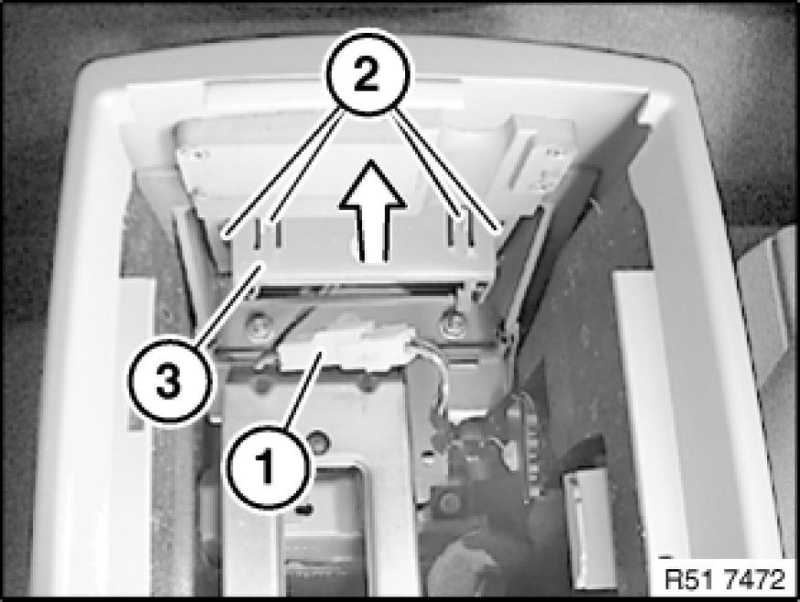
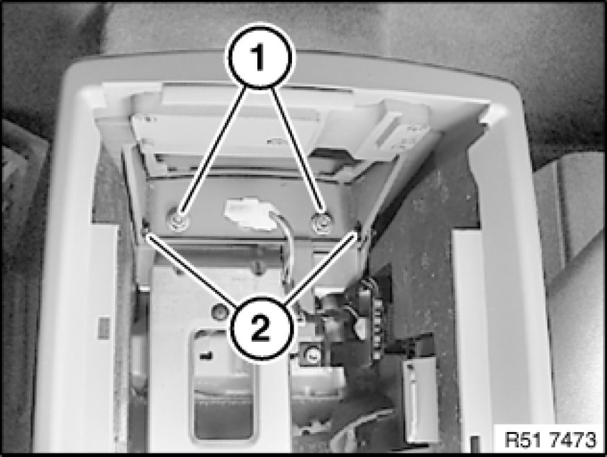
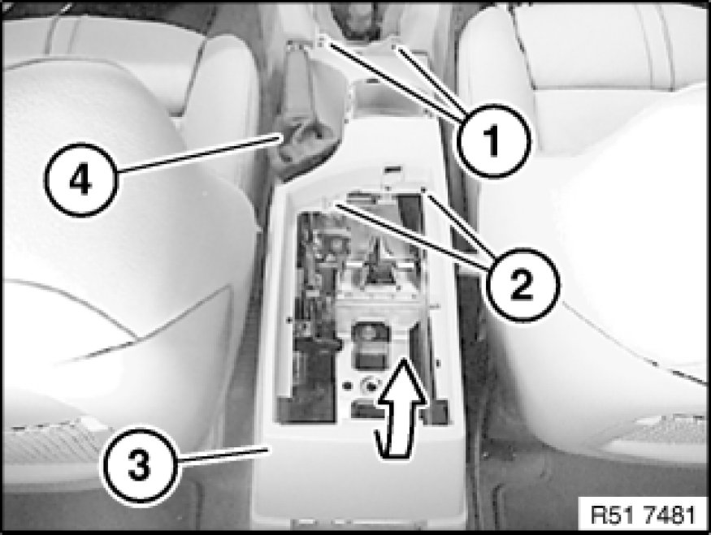

51 16 200 Removing and Installing Storage Compartment
51 16 200 - Removing and installing storage compartment

Special tools required:
- 00 9 317 00 9 317 Trim Panel Wedge

Necessary preliminary tasks:
- Remove function carrier 51 45 106 - Removing and installing/replacing function carrier on instrument panel trim

Open cover for center armrest.
Lift out storage compartment (1).
Note:
For purposes of clarity, all the following operations are shown with the center armrest removed.

Disconnect plug connection (1).
Unclip catches (2) on housing for cigarette lighter (3).
Remove housing (3) in direction of arrow.
Installation:
Catches (2) must not be damaged

Release nuts (1) and screws (2) on rear storage compartment.

Unclip catches (1) on gaiter (2) with special tool 00 9 317 00 9 317 Trim Panel Wedge.
Pull off gaiter (2) towards top.

Release screws (1 and 2).
Feed out storage compartment (3) past gaiter (4) and remove towards top rear.